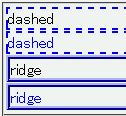
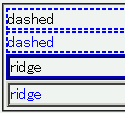

border-colorプロパティが未指定の場合、outset, inset, ridge, grooveの各ボーダーの色は当該要素のcolorプロパティの値とは異なる色になってしまう。
<div style="border:2px dashed blue;">dashed</div> <div style="border:2px dashed; color:blue;">dashed</div> <div style="border:4px ridge blue;">ridge</div> <div style="border:4px ridge; color:blue;">ridge</div>
dashedボーダー（バグが発生しない）とridgeボーダー（バグが発生する）について、border-colorプロパティを指定した場合とcolorプロパティから参照させた場合の結果を比較しています。
N7.1での表示（標準モード）
WinIE6.0での表示（標準モード）
WinIE5.5、WinIE6.0標準モード、WinIE6.0互換モードで不具合の発生を確認しました。